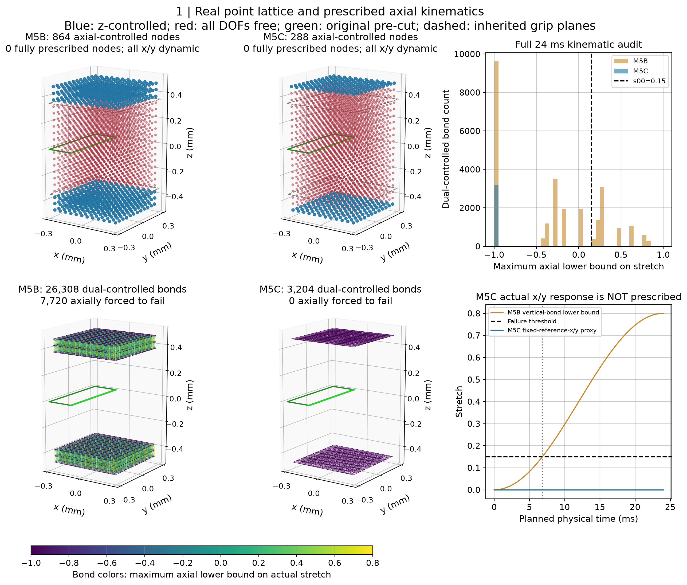
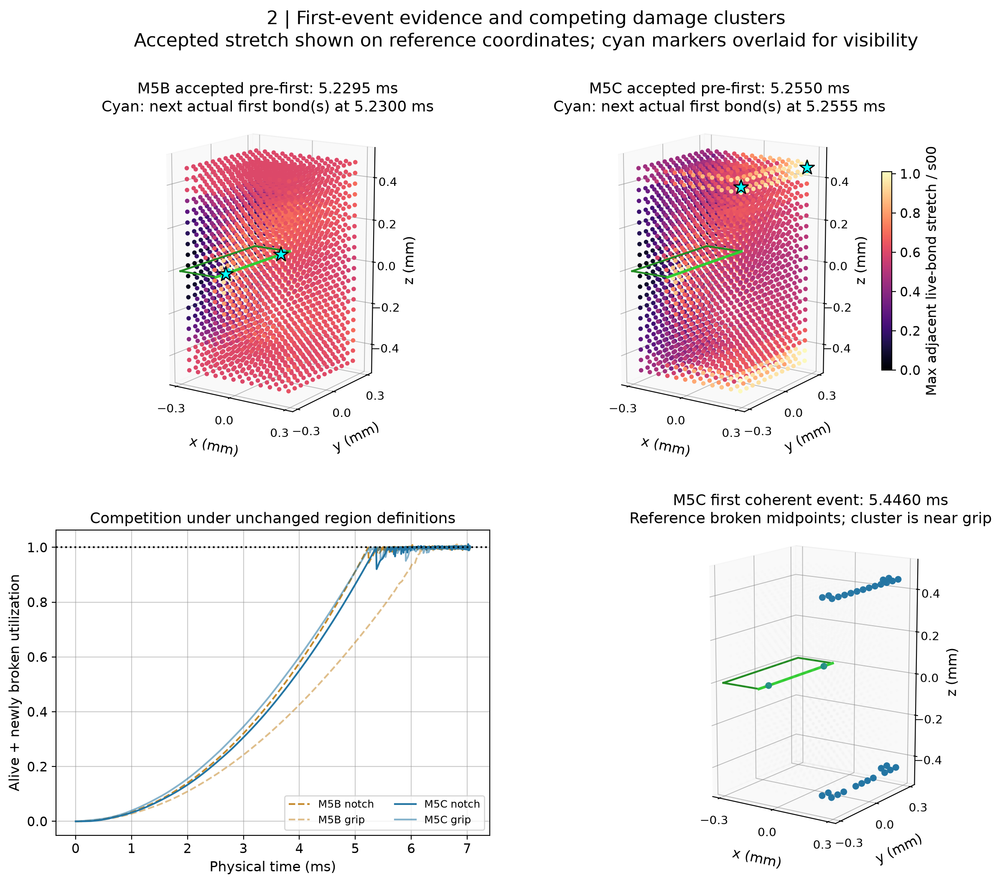
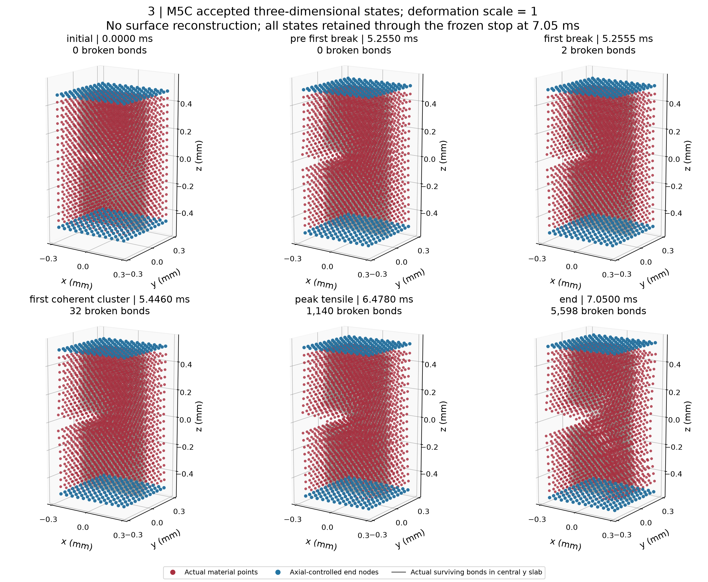
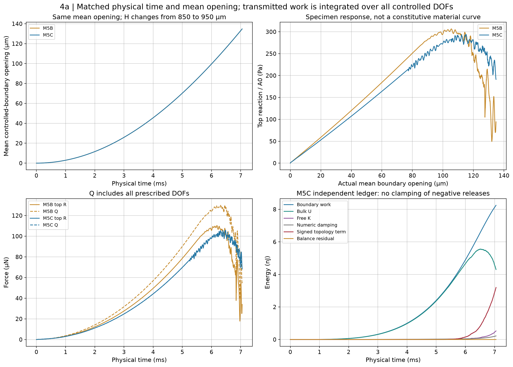
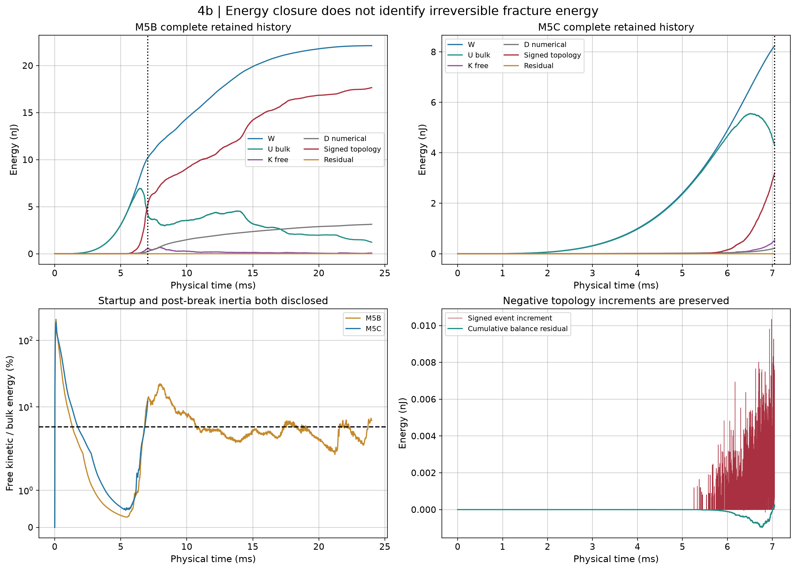
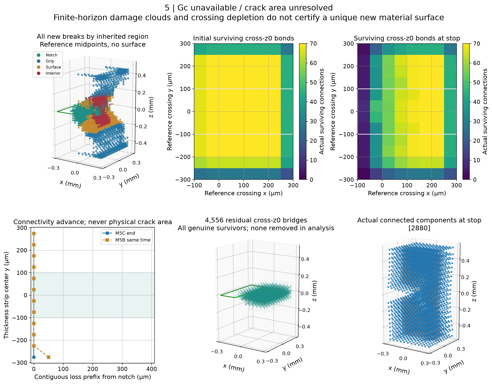

Run 20261011T115626Z · 正式M5C 1次 · 0次重试 · 材料和生产参数不变
首断5.2555 ms发生在端面角点；7.05 ms按冻结规则停止。中央有断键，但没有连续跨面完全失连推进，仍为一个2880点连通体。
中文审查 · 分项状态 · 对照CSV · 实施验证 · 旧边界根因 · 运行前冻结设计 · 运动学审计 · 裂纹推进审计 · 面积尝试 · 能量账本 · 接触力 · 停止判据重放






科学图使用原生接受态，不生成假想裂面；体素和跨面连接是空间诊断。大型逐步原始文件保存在服务器，本地提供关键精度证据。
文档备份 · 文档diff · 写入与SHA回执 · 文件清单与SHA